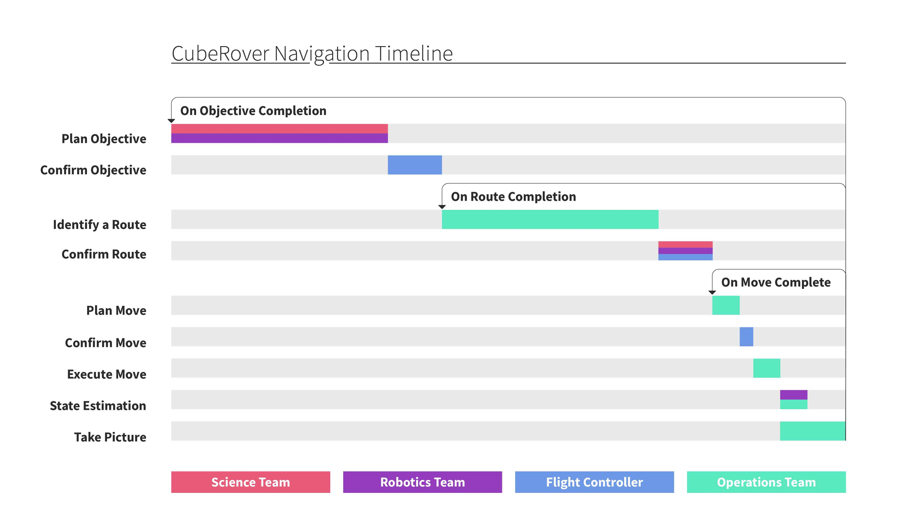

<div class="case">
  <div class="case__container">
    <app-header></app-header> 
    <div class="float">
      <div class="float__top"></div>
      <h1 class="header__big float__header">CubeRover</h1>

      <p class="float__text text__regular text__em">This page was last updated Sep 24, 2018. The project moves quickly so feel free to reach out and get an update.</p>


      <p class="float__text text__regular">The CubeRover is a 2kg lunar rover which aims to dramatically reduce the cost of operating a rover on the moon through modularity and standardization of components. I currently serve as the Teleoperation Lead where I manage and direct a team of students designing and developing software to control the rover on the moon. As a result of our 2kg mass the CubeRover poses some unique challenges for teleoperation including very limited data bandwidth, a single camera for navigation and a low profile that makes crossing terrain difficult.</p>

      


      <p class="float__text text__regular">Serious consideration of the CubeRover teleoperation system began in August 2018. So far, we have focused on developing our plan for surface operation and building profiles of our users. We hope these steps will enable us to design the most reliable and useful displays possible.<br><br>The first document we developed was a stakeholder map. This document has been used to guide our progress forward in who needs to be consulted at each phase of progress.</p>
      
      
      <p class="float__text--label text__regular">Stakeholder Map primarily designed and researched by: Alessandra Fleck</p>

      <p class="float__text text__regular">After the Stakeholder map we did a lot of background research on three primary areas of teleoperation these were fault detection, helping the user identify and diagnose issues with the rover; navigation, the process by which the user identifies and commands the rover to a route; and organizational structures, the structure of our mission team which would operate the rover.</p>

      <div class="float__subtitle">
        <h2 class="header__medium float__subtitle--text">Navigation</h2>
      </div>

      <p class="float__text text__regular">For navigation we found much of the modern research on navigation methods focused, appropriately, on autonomy. Due to the limited processing power and vision systems of the CubeRover and the relatively low time delay of earth to moon communication we decided that our autonomy should focus on safeguarding and let human users navigate the rover. The following diagram describes our current navigation process in terms of loops. The first “objective” loop describes a mission objective such as surveying a certain area. The “route” loop describes the route needed to accomplish part or all of the objective and the “move” loop describes the many small moves needed to complete a route.</p>

      

      <p class="float__text text__regular">The navigation team is currently prototyping onscreen aides to help in distance estimation and wireframing the first displays for the operators.</p>

      <div class="float__subtitle">
        <h2 class="header__medium float__subtitle--text">Fault Detection</h2>
      </div>

      <p class="float__text text__regular">During our research of fault detection methods, we came across three areas of particular interest.</p>

      <ol class="float__list text__regular">
        <li class="float__list--item"><span class="text__bold">Expert Fault Alerts:</span> This method uses pre-programed thresholds or conditions to suggest issues to the user in a clear and fast manner.</li>
        <li class="float__list--item"><span class="text__bold">Fault Detection Filters:</span> This method uses pre-programed thresholds or conditions to suggest issues to the user in a clear and fast manner.</li>
        <li class="float__list--item"><span class="text__bold">Analysis of Significant Temporal Patterns:</span> By analyzing telemetry originally in a numerical time series this method hopes to identify key areas of interest where patterns are broken or formed.</li>
      </ol>

      <p class="float__text text__regular">As the Avionics and Flight Software teams continue their work we expect to be able to implement our research in fault detection filters and significant temporal patterns. In the meantime, we are currently developing wireframes for several expert systems.</p>

      <div class="float__subtitle">
        <h2 class="header__medium float__subtitle--text">Organizational Structure</h2>
      </div>

      <p class="float__text text__regular">Ensuring that our team can function cohesively and quickly is essential to a successful mission. To that end we have begun exploring how we should structure our teams and what responsibilities rest with each.<br><br>Our first step in determining team structures was to lay out a timeline of the mission and start to fill in tasks and assign those to particular teams.</p>

      

      <p class="float__text text__regular">After our first pass we decided on four primary mission teams. Each team has several members who are responsible for particular parts of the team’s objective, these will be the users for which we design our eventual displays.</p>


      <ol class="float__list text__regular">
        <li class="float__list--item"><span class="text__bold">Operations:</span> responsible for navigating and commanding the rover.</li>
        <li class="float__list--item"><span class="text__bold">Flight Control:</span> responsible for making critical decisions about the mission and coordinating other teams.</li>
        <li class="float__list--item"><span class="text__bold">Science:</span> responsible for planning and ensuring the science component of the mission is completed.</li>
        <li class="float__list--item"><span class="text__bold">Robotics:</span> responsible for ensuring the safety of the rover and diagnosing faults.</li>
      </ol>

      
      
      <p class="float__text--label text__regular">Operations Timeline digitized by: Alessandra Fleck</p>

      <p class="float__text text__regular">The next step for the operations team is developing profiles for each of our preliminary users to be used in the design of screens and the continued iteration of our operations timeline to best fit our mission.<br><br>For the latest updates please reach out to me directly, I’ll do my best to keep this page up to date.</p>

    </div>
    
  </div>
</div>